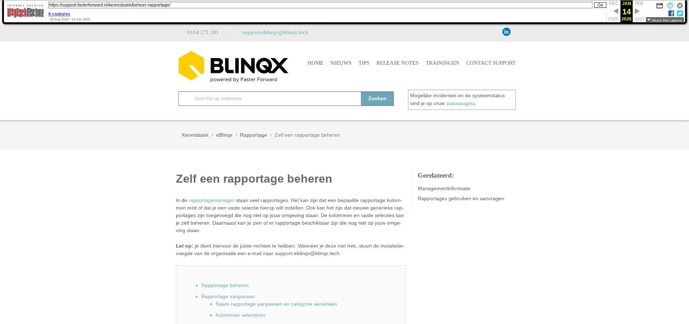

Zelf een rapportage beheren

Tekstinhoud
Zelf een rapportage beheren
In de rapportagemanager staan veel rapportages. Het kan zijn dat een bepaalde rapportage kolommen mist of dat je een vaste selectie hierop wilt instellen. Ook kan het zijn dat nieuwe generieke rapportages zijn toegevoegd die nog niet op jouw omgeving staan. De kolommen en vaste selecties kan je zelf beheren. Daarnaast kan je zien of er rapportage beschikbaar zijn die nog niet op jouw omgeving staan.
Let op: je dient hiervoor de juiste rechten te hebben. Wanneer je deze niet heb, stuurt de mutatiebevoegde van de organisatie een e-mail naar support-eblinqx@blinqx.tech.
Rapportage beheren
Rapportage aanpassen
Naam rapportage aanpassen en categorie aanvinken
Kolommen selecteren
Filters instellen
Rapportage toevoegen
Gewenste aanpassing niet mogelijk
Rapportage beheren
Om de rapportage te beheren ga je naar Beheer – Rapportagebeheer. Vervolgens selecteer je hier de betreffende rapportage die je gaat aanpassen.
Rapportage aanpassen
Het is mogelijk om de volgende zaken aan te passen:
Naam rapportage aanpassen en categorie aanvinken
In het tabblad Algemeen is het mogelijk om de naam van de rapportage aanpassen en de categorie(ën) te bepalen. Bij de categorie kan je aangeven of je de rapportage wilt gebruiken voor het opstellen van een campagne. Staat de categorie campagne niet aangevinkt dan kan je deze rapportage niet selecteren in de campagnemanager.
Kolommen selecteren
In het tabblad Kolommen kun je aangeven welke kolommen van de rapportage wel/niet weergegeven moeten worden. Onderin staan de kolommen die niet zijn aangevinkt. Ook is het mogelijk om de volgorde van de kolommen zelf in te delen. Je kunt ze verslepen door te klikken op de naam van de kolom en dit dan vast te houden.
Per kolom kan je aangeven wat de waarde is. Indien gewenst is het mogelijk om vanuit een rapportage op het dossiernummer te klikken en daarmee doorverwezen te worden naar het dossier. Hiervoor selecteer je achter de kolom Dossiernummer 'Dossier'.
Filters instellen
In het tabblad Filters kan je bepaalde filters instellen die voor de gehele omgeving gelden. Let op: dit zijn dus géén persoonlijke filters. Op deze manier kan je een rapportage die in één keer veel informatie ophaalt, opsplitsen in meerdere rapportages die maar één deel van de rapportage ophaalt. Omdat het filter geldt voor de gehele organisatie hoeft dan niet iedere persoon een persoonlijke selectie hiervoor te maken.
Je voegt een filter toe door middel van het plusicoon. Per filterblok kan je meerdere voorwaarden/filters toevoegen. Voor de werking van het filter is het belangrijk of je kiest voor 'En' of 'Of'. Bij 'En' gelden alle filterblokken en/of filters van filterblokken. Het is cumulatief. Wanneer je kiest voor 'Of' dan zijn het 'losse' voorwaarden.
Wanneer je een filterblok heeft toegevoegd verschijnt er een plusje voor het filterblok. Via het plusje kan je extra filters toevoegen.
De wijzigingen die je hier invoert, gelden voor de desbetreffende rapportage in de hele omgeving.
Rapportage toevoegen
Via het plusicoon kan een bestaande generieke rapportage toevoegen aan jouw omgeving.
Wanneer je op het plusicoon hebt geklikt, wordt in een dropdownmenu alle rapportages getoond die in de database beschikbaar zijn.
In het dropdownmenu kan je de gewenste rapportage selecteren en vervolgens toevoegen door te klikken op de knop Selecteer. Dan vul je de rapportage zoals gewenst in. Je geeft de rapportage een naam en je selecteert de categorie. Indien je Campagne aanvinkt kan de de rapportage gebruikt worden in de campagnemanager.
Nadat je dit hebt ingevuld en opgeslagen kan je de kolommen en selecties maken, zoals hierboven omschreven.
Gewenste aanpassing niet mogelijk
Is de gewenste aanpassing niet mogelijk dan kan je een maatwerkrapportage aanvragen. Hier lees je daar mee over.
Laatste update: 15 oktober 2025
Was deze informatie nuttig?
Ja Nee